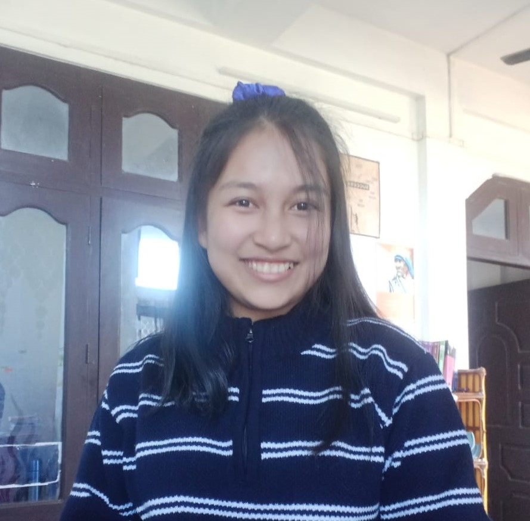

Khumanthem Radhapyari Devi
radhapyarikhuman123@gmail.com
Contact no:999000000
Github

Summary
Passionate Machine Learning enthusiast with experience in predictive modeling, time-series analysis, and innovative tools like Streamlit and LangChain. Skilled in Python, C++, data structure and Algorithm and data analytics, with active involvement in coding and ML clubs. Eager to leverage technical expertise and problem-solving skills to drive impactful AI and technology projects.
Education
National Institute of Technology, Silchar
B.Tech in Computer Science and Engineering; CGPA: 8.99Jawahar Navodaya Vidyalaya(JNV) S.A. Umathel
Higher Secondary (PU: 10+2); Percentage: 95.0
Positions of Responsibility
Machine Learning Club, NIT Silchar
Executive member
Coding Club, NIT Silchar
Technical member
Skills
- Languages: C, C++, Python
- Frameworks: PyTorch, TensorFlow, scikit-learn, Pandas, NumPy, openCV, streamlit
- Tools: Git, GitHub, VS Code, Jupyter, Figma
- Soft Skills: Leadership, Event Management, Teamwork, Time Management
- Languages Spoken: English, Hindi, Manipuri